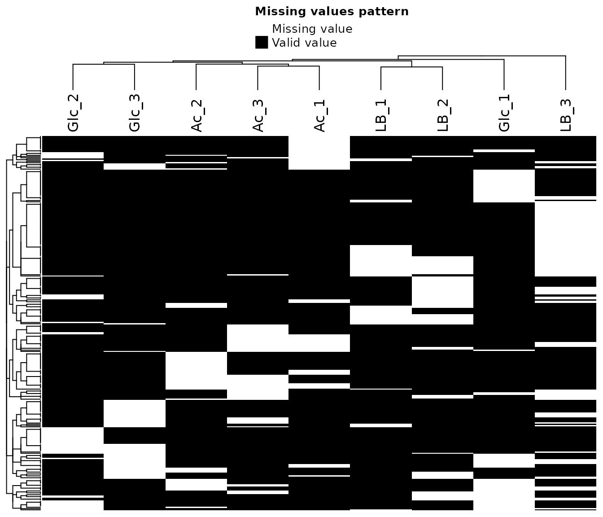
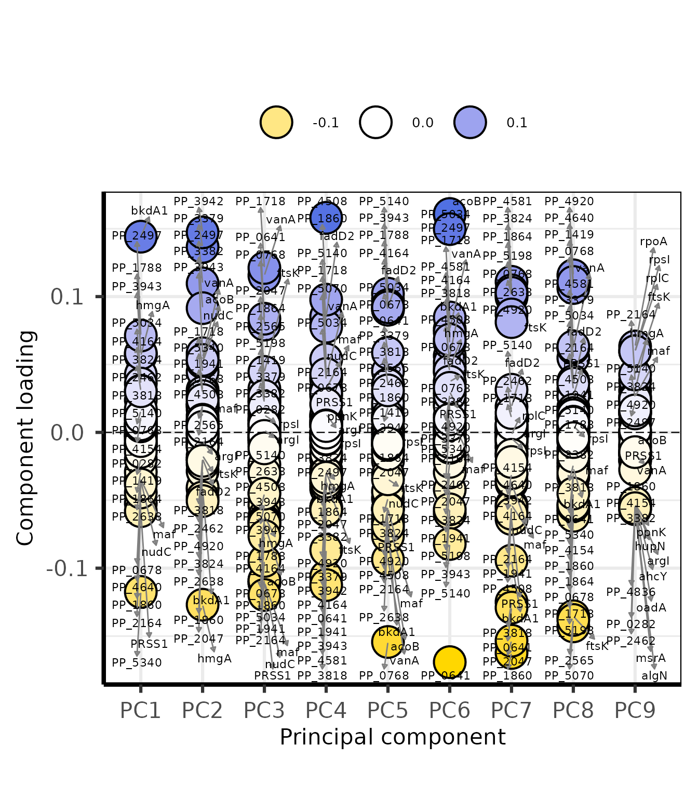
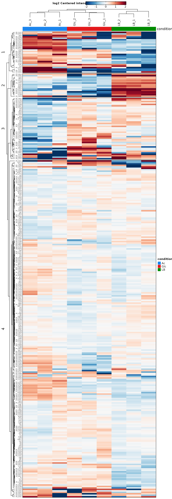
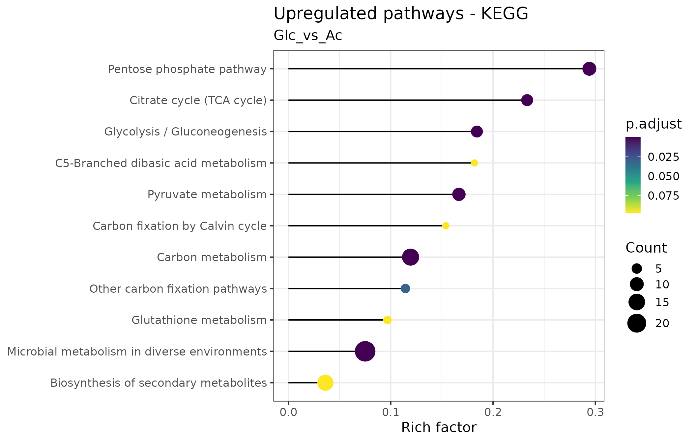
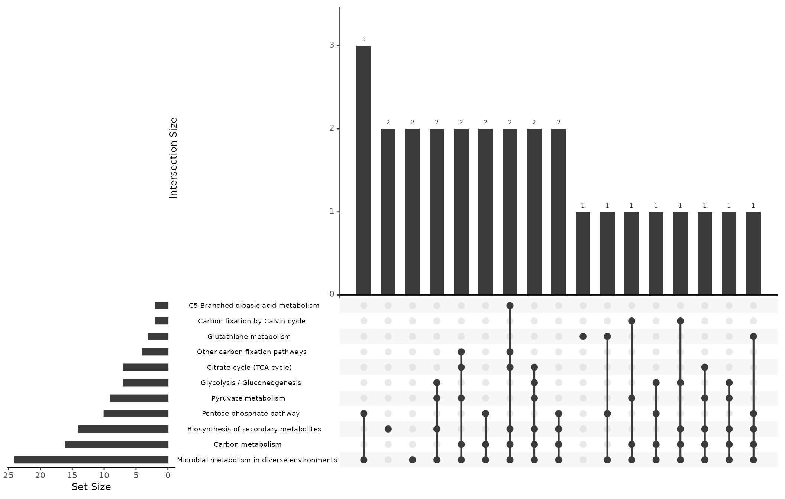
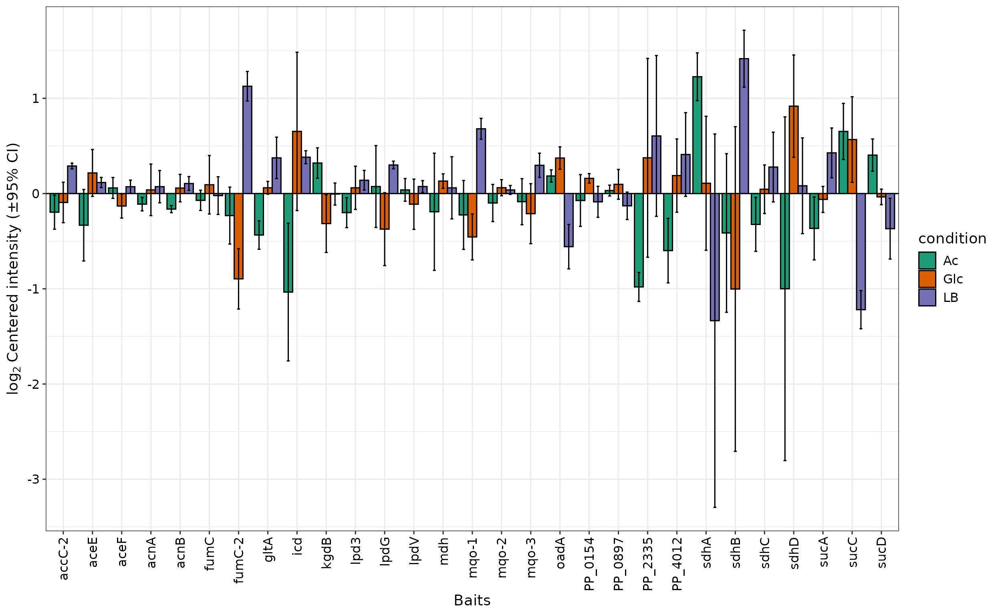
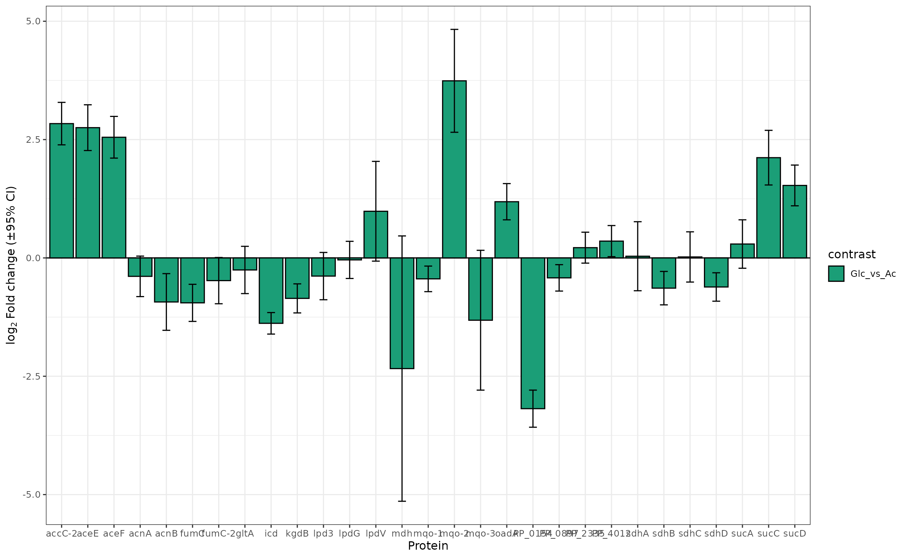

Reliable and extensive analysis of Proteomics data with package `VisomX`
Nicolas T. Wirth
2022-01-31
Source:vignettes/vignette_proteomics.Rmd
vignette_proteomics.Rmd

Introduction
The aim of this VisomX’s proteomics section is to
provide an integrated analysis workflow for robust and reproducible
analysis of mass spectrometry proteomics data for differential protein
expression or differential enrichment. This section is build on the
foundation of the R package DEP (Zhang et al., 2018).
VisomX was designed to be usable with minimal prior
knowledge of the R programming language or programming in general. You
will need to be familiar with the idea of running commands from a
console or writing basic scripts. For R beginners, this is
a great starting point, there are some good resources here and we
suggest using the RStudio
application. It provides an environment for writing and running R
code.
With consideration for R novices, VisomX
establishes a framework in which a complete, detailed proteomics data
analysis can be performed in two simple steps:
Read data from a tabular input with protein abundances, as generated by quantitative analysis software of raw mass spectrometry data, and apply several filters.
Run workflow, including missing value imputation, normalization, log2 transformation, statistical analysis, differential expression analysis, pathway enrichment analysis, and rendering of a report that summarizes the results.
All computational results of a workflow are stored in a data container (list) and can be visualized by passing them to a set of dedicated plotting functions.
Installation
Install the most current version with package
devtools:
install.packages("BiocManager")
BiocManager::install("NicWir/VisomX")Load the package:
The Test Dataset
The proteomics test dataset was generated by culturing Pseudomonas putida KT2440 in 500-mL shaken flasks filled with 50 mL media at 30°C and 250 rpm. The media were either synthetic de Bont medium supplemented with 20 mM glucose or 30 mM acetate, or LB medium. Samples were taken in the mid-exponential phase, and cells were harvested by centrifugation at 17,000 x g for 2 min at 4°C. After removal of the supernatant, cell pellets were frozen and kept at −80°C until proteomics analysis was performed as described previously (Rennig et al., 2019). No normalization of protein abundances was performed prior to this analysis.
The path to the example dataset can be extracted with:
system.file("prot_KT2440_glc_ac_LB.txt", package = "VisomX")[1] “/home/runner/work/_temp/Library/VisomX/prot_KT2440_glc_ac_LB.txt”
Data Format
VisomX requires a tabular input, either in the form of
an R dataframe, or stored in an XLS, XLSX,
CSV, TSV, or TXT file. Three types of columns
are required:
A column containing protein identifiers. These can be Uniprot identifiers, Ensembl Gene IDs, Entrez Gene IDs, etc.
A column containing names. Gene Symbols are commonly used for this purpose.
Columns containing protein abundances of the different samples in the experiment. These columns should have a common prefix (e.g., abundance.) used for their identification within the table. Furthermore, replicates are indicated by an underscore followed by a number. For example, abundance.KT2440_Glc_1, abundance.KT2440_Glc_2, abundance.KT2440_Glc_3, and abundance.KT2440_Glc_4 indicate four replicates for the condition KT2440_Glc.
Optional: Columns containing + and - indicating contaminant proteins and decoy database hits that should be filtered out.
Run a Complete Proteomics Analysis Workflow
Read Data
The function prot.read_data() accepts either an R
dataframe or the path to a table file with extension ‘.xlsx’, ‘.xls’,
‘.csv’, ‘.tsv’, or ‘.txt’. It creates a
SummarizedExperiment object and performs feature filtering
based on indicated contaminants or unspecific identification, a defined
relative standard deviation threshold, or the presence of missing
values. For details about this function, run
help("prot.read_data", "VisomX"). For instructions on how
to work with SummarizedExperiment objects, see the Bioconductor
manual Here, we filter proteins that are not present in at least 6
out of 9 samples.
# Read data, incl. filtering
data <- prot.read_data(
data = system.file("prot_KT2440_glc_ac_LB.txt", package = "VisomX"),
pfx = "abundance.",
id = "Ensembl Gene ID",
name = "Gene Symbol",
filt_type = "fraction",
filt_min = 0.66)## Removing proteins with no defined name in column "Gene Symbol" or "Ensembl Gene ID". (Removed: 5 proteins)## Writing experimental design file to: /home/runner/work/VisomX/VisomX/vignettes/experimental_design.txt## Generating SummarizedExperiment.## 490 out of 3067 proteins were removed from the dataset due to missing values.
##
## Identified conditions:
## Glc, Ac, LB
## No samples have all proteins as NA.
## No samples to remove.Run Workflow
The wrapper function prot.workflow() runs a complete
analysis workflow and exports the results as tabular TXT files as well
as (optionally) a report in PDF and HTML format. The following settings
usually need closer consideration:
We use the “SampMin” method for missing value imputation (
imp_fun), which has been shown to be among the most reliable methods for both missing-not-at-random (MNAR) and missing-completely-at-random types of missing values (Liu & Dongre, 2021).For the types of comparisons to perform (
type), we choose “all” to cover all possible contrasts. Alternatively, one can compare every condition with a single control condition by choosingtype = 'control'and defining the control condition withcontrol. If only very specific contrasts are of interest,type = 'manual'can be chosen and the desired contrasts can be defined as a vector of strings in the formcontrast = c('ConditionA_vs_ConditionB', ConditionC_vs_ConditionD'). The_vs_substring is hereby essential!We set the significance threshold for adjusted p values (
alpha) at 0.05.VisomXtests for differential expression of proteins based on protein-wise linear models and
empirical Bayes statistics usinglimma. False Discovery Rates are estimated usingfdrtool.We define 1 as the relevance threshold for log2 fold changes (
lfc), corresponding to fold changes of 2 and 0.5, to be considered significant.We choose
pathway_enrichment = TRUEto perform pathway enrichment analysis. We test for enriched KEGG pathways by settingpathway_kegg = TRUEand defining akegg_organism. We also test for enriched pathways extracted from the BioCyc database as a tab-delimited TXT file included inVisomX. To test against a set of pathways other than those listed in KEGG, we provide a dataframe object with columns ‘Pathway’ and ‘Accession’. Important: The names or IDs used for proteins/genes listed under ‘Accession’ need to correspond to the IDs initially used to create the SummarizedExperiment withprot.read_data().Lastly, we choose whether a report shall be generated and exported into a subfolder of the current working directory (omitted because of the long run time associated).
# Read TXT file with BioCyc pathways for P. putida KT2440
custom_df <-
read.table(
system.file("BioCyc_pathways_KT2440.txt", package = "VisomX"),
sep = "\t",
header = T,
stringsAsFactors = F,
fill = T,
na.strings = "",
quote = "",
comment.char = "",
check.names = F
)
# Run workflow and export results
results <- prot.workflow(se = data,
imp_fun = "SampMin",
type = "all",
alpha = 0.05,
lfc = 1,
pathway_enrichment = TRUE,
pathway_kegg = TRUE,
kegg_organism = "ppu",
custom_pathways = custom_df,
volcano.add_names = FALSE, # show protein labels in volcano
report = FALSE,
out.dir = tempdir()
)## Running proteomics workflow in the directory:/tmp/Rtmp5T4KSJTested contrasts: Glc_vs_Ac, Glc_vs_LB, Ac_vs_LB
## 316 proteins were found to be differentially expressed with alpha = 0.05 and |log2(fold change)| > 1.## Save results as tab-delimited table to: /tmp/Rtmp5T4KSJ/results.txt## Save RData object## Writing results of KEGG pathway enrichment analysis to: /tmp/Rtmp5T4KSJ/pora_kegg_contrast...txt'## Writing results of custom pathway enrichment analysis to: /tmp/Rtmp5T4KSJ/pora_custom_contrast...txtCustom workflows
If further customization of certain computational steps are required,
all steps included within prot.workflow() can also be
performed manually. The following steps are required to end up with the
same results list object as obtained with the workflow function:
# 1. Perform data normalization:
prot_norm <- prot.normalize_vsn(se)
# 2. Missing value imputation
# a. with imp_fun == "MinProb":
prot_imp <- prot.impute(prot_norm, fun = imp_fun, q = q)
# b. with imp_fun == "knn":
prot_imp <- prot.impute(prot_norm, fun = imp_fun, rowmax = knn.rowmax)
# c. for all other methods:
prot_imp <- prot.impute(prot_norm, fun = imp_fun)
# 3. Principal component analysis
prot_pca <- prot.pca(SummarizedExperiment::assay(prot_imp))
# 4. Test for differential expression by empirical Bayes moderation of a linear model and defined contrasts:
prot_diff <- prot.test_diff(prot_imp, type = type, control = control, test = contrast)
# 5. Denote significantly differential proteins:
prot_dep <- prot.add_rejections(prot_diff, alpha = alpha, lfc = lfc)
# 6. Generate a results table:
prot_res <- prot.get_results(prot_dep)
# 7. Pathway enrichment analysis
# a. Get vector of tested contrasts:
contrasts <- SummarizedExperiment::rowData(prot_dep) %>%
data.frame(check.names = FALSE) %>%
select(ends_with("_diff")) %>%
colnames() %>% str_replace_all("_diff", "")
# b. Perform pathway enrichment analysis
res.pathway <- enrich_pathways(prot_dep, contrasts, alpha_pathways = alpha_pathways,
pathway_kegg = pathway_kegg, kegg_organism = kegg_organism,
custom_pathways = custom_pathways)
# 8. Assemble results into list
results <- list(data = SummarizedExperiment::rowData(se), se = se, norm = prot_norm,
imputed = prot_imp, pca = prot_pca, diff = prot_diff, dep = prot_dep,
results = results, param = param)Plot Results
Most plots available in VisomX are generated
automatically within the report. Additionally, the figures are
automatically exported as PNG and PDF files if argument
export = TRUE when running
prot.workflow().
To customize specific plot or generate them post-hoc, this section provides an overview of available plotting functions.
Effect of Normalization
The purpose of the following graphs is to determine if there is a systematic trend in the standard deviation of the data as a function of overall expression. These graphs are based on the assumption that most proteins are not differentially expressed, so the running median is a reasonable estimate of the standard deviation of the data at the feature level, as a function of the mean. After vsn normalization, the running median should be approximately a horizontal line. While a completely flat curve of the square root of variance over the mean may seem like the goal of such transformations, this may be unreasonable in the case of datasets with many true differences due to the experimental conditions. There may be random fluctuations, but there should not be a general trend. If this is not the case, it usually indicates a data quality problem or is the result of inadequate data preprocessing.
SD-Rank(mean) plot before normalization:
SD-Rank(mean) plot after normalization:
Box plots of the distributions before and after normalization:
Missing Values
Missing values in the data set must be imputed. The downstream
analysis can be strongly influenced by the imputation. Therefore, the
selection of an appropriate method is crucial. The data can be missing
at random (MAR), for example if proteins are quantified in some
replicates but not in others, without any bias towards low intensities.
This class of missing values can arise when the peptide sequence is
mapped incorrectly or software erroneously assigns shared peptides to
precursors leading to misidentification in some samples and missing
values in others.
MNAR may result from experimental effects such as (1) enzyme
miscleavages, (2) true presence/absence in the biological samples and
(3) instrumentation effects (when peptide measurements are low in
abundance compared to background noise or constitute low ionization
efficiency). Because values are missing because of low abundant nature
of the respective proteins, this category of missing values is
considered left-censored, i.e., the distribution of values (if present
in the data) would fall on the left tail of the total observations in
the dataset. A detailed treatise about missing values in the context of
proteomics data can be found here: Missing
value handling
Define Missing Value Type
To asses the type of missing data (random or not), the following heat
map of missing values and density distributions of proteins with/without
missing values provide a visual aid.
If data is randomly missing, use the k-nearest neighbor (“knn”)
or maximum likelihood (“MLE”) options for imputation. If the
missing data is biased to certain samples (e.g. controls) which are
expected to be depleted of certain proteins and/or if there is a clear
bias of missing values towards low abundances, use the “QRILC”,
“MinProb”, “SampMin”, or “man” options for
imputation. For a more detailed description of different imputation
methods, see the MSnbase
vignette and in particular the impute function description. The
“SampMin” method was proposed by Liu and Dongre (2020))
and shown to outperform other common methods for MNAR, left-censored
datasets.

To check whether missing values are biased toward low-intensity proteins (i.e., ‘left-censored’), densities and cumulative proportions are plotted for proteins with and without missing values.
Quality Control
Principal Component Analysis
To get a high-level overview of the data, the unsupervised method principal component analysis (PCA) reduces the data dimensionality (i.e., number of proteins included in the analysis) while retaining most of the data information. PCA is an unsupervised method for reducing the dimensionality of high-dimensional data. The goal of PCA is to find a new set of variables, called “principal components,” that capture most of the data information while reducing the number of dimensions. This is achieved by finding a new coordinate system that aligns with the directions of maximum variance in the data. The first principal component captures the most variation in the data, the second component captures the second-most variation, and so on. By retaining only the first few principal components, the data can be reduced to a lower-dimensional representation while retaining most of the important information. This can be useful for visualizing the data, reducing noise, or improving the performance of machine learning algorithms.
Scree Plot
A scree plot in principal component analysis (PCA) is a graphical representation of the eigenvalues of the principal components. It helps to determine the number of significant components in a PCA analysis by plotting the eigenvalues against the component number. The “scree” refers to the downward-sloping “elbow” shape that often appears in these plots, which is used as a visual aid for determining the number of important components. The idea is to keep components with large eigenvalues and discard the others, as they are likely to be noise or have little contribution to the data variance.
From the Scree Plot, we see that the first two PCs explain about two-thirds of the observed variation in the dataset. Further components provide little explanatory value.
2D PCA plots
A 2D PCA plot is a visualization of a dataset after undergoing principal component analysis (PCA) and reducing the data to two dimensions. In a 2D PCA plot, each data point is represented as a dot on a 2D graph, with the x-axis and y-axis representing the first and second principal components, respectively. These new coordinates, or principal components (PCs), are not real variables generated by the system and therefore, applying PCA to a dataset loses its interpretability.
However, despite the loss of interpretability, PCA can be very useful in identifying batch effects and assessing which original samples are similar and different from each other. By plotting the data in the 2D PCA space, it can be easier to visualize and identify clusters of similar samples, and distinguish samples that are different from each other. This information can then be used to better understand the underlying structure of the data, and improve the accuracy of downstream analyses and applications.
The function prot.plot_pca internally performs PCA
analysis and requires a SummarizedExperiment object. Thus, the
imp rather than the pca object is used as
input.
We can see that the three conditions cluster well in PC1, less in PC2, and not at all in PC3 which explains only 9.5% variation within the dataset.
Loadings plot
PCA loadings are the coefficients of the linear combination of the original variables (proteins) from which the principal components (PCs) are generated. They describe how much each gene contributes to a particular principal component. Large loadings (positive or negative) indicate that a particular variable has a strong relationship to a particular principal component. The sign of a loading indicates whether a variable and a principal component are positively or negatively correlated.
The prot.plot_loadings() function accept a
pca object generated with prot.pca().

High loadings on PCs that explain the observed variations to a high degree are a direct indicator that the respective proteins play an important role in distinguishing the tested conditions. In PC1, the LB group clustered at a great distance to the Glc and Ac groups. The high loading of BkdA1 on PC1 suggests that differences in the abundance of this protein are a significant factor distinguishing the conditions. This makes sense, since it is a subunit of the branched-chain alpha-keto acid dehydrogenase complex, involved in the degradation of branched chain amino acid, an abundand carbon source in LB medium that is absent in the other conditions.
Correlation Matrix
A correlation matrix is a type of data matrix that shows the pairwise relationships between variables in a dataset. In quality control, a correlation matrix can be used to assess the quality of the data by examining the relationships between samples. By plotting the samples in a correlation matrix, it is possible to identify groups of samples that are highly similar to each other, and to differentiate samples that are not similar. This can be useful for identifying and correcting batch effects, which can affect the accuracy of the data analysis. For example, if some samples are highly correlated within a batch, but not correlated with samples from another batch, this may indicate that the samples from different batches have been processed differently, and that further adjustments or normalization may be necessary to ensure accurate analysis. A correlation matrix is usually represented as a heatmap, where each cell in the matrix represents the pairwise correlation between two samples. Samples that are highly correlated will appear in similar colors in the heatmap, while samples that are not correlated will appear in different colors.
The Pearson coefficient, also known as Pearson’s correlation coefficient, is a statistic that measures the strength and direction of the linear relationship between two continuous variables.
The Pearson coefficient ranges from -1 to 1, with a value of 1 indicating a perfect positive linear relationship, a value of -1 indicating a perfect negative linear relationship, and a value of 0 indicating no linear relationship. Positive values of the Pearson coefficient indicate that as one variable increases, the other variable also increases. Negative values of the Pearson coefficient indicate that as one variable increases, the other variable decreases.
Differential expression analysis
The following plots are a visual representation of differential expression (DE) analysis. DE analysis is the process of comparing gene or protein expression levels between two or more groups of samples in order to identify genes or proteins that are differentially expressed between the groups. The aim of DE analysis is to identify genes or proteins that show statistically significant differences in expression levels between the different groups.
Correlation Matrix with Significant Proteins
In the following correlation plot, we consider only significant proteins:
Heatmaps
Heat maps are either used to visualize the expression level of each protein in each sample or the log2 fold changes for each tested contrast. The heat maps give an overview of all proteins with significantly different abundances (rows) in all samples (bars). This allows general trends to be identified, for example when one sample or replicate differs from others. In addition, clustering of samples (columns) can point to more similar samples and clustering of proteins (rows) can indicate proteins that behave in a similar way. By considering only significant proteins we can get a better overview of the expression levels of proteins that are relevant to the comparison of the conditions.

Pathway overrepresentation analysis
Pathway overrepresentation analysis is a method used to identify pathways that are significantly enriched in a set of genes or proteins. It is a useful tool for interpreting the results of gene or protein expression studies, as it can identify pathways that are likely to be involved in the studied biological process.
We use lollipop charts to visualize significantly enriched pathways. In these plots, each enriched pathway is represented as a horizontal line, with the length indicating what fraction of the total genes constituting the pathway were found to be enriched (e.g, if a pathway consists of 10 genes of which 6 were found to be overrepresented, the Rich factor is 0.6). The circle size at the end of the ‘lollipops’ indicates the absolute number of enriched genes in the pathway, while its color indicates the adjusted p value associated with the finding.
Instead of Venn diagrams to illustrate the relationship between different gene sets and how they overlap, we use UpSet plots [Lex et al. (2014)](Conway et al., 2017). In a Venn diagram, the intersections between sets are represented as overlapping circles, with the area of the overlap representing the number of elements in the intersection. However, Venn diagrams become less effective as the number of sets increases, since the overlapping circles can become complex and difficult to interpret. In contrast, UpSet plots are more effective for larger numbers of sets, as they represent the intersection between sets as bars across the x-axis, with the height of the bars representing the number of elements in the intersection. The matrix below the bar chart provides details about the set intersections. This makes it easier to compare and visualize the relationships between sets, even when there are many sets. Further instructions on how to interpret UpSet plots can be found at https://upset.app/.
KEGG pathways
In the following plot, we have used the KEGG pathways to visualize the significant proteins that are differentially expressed within the tested contrast.
We can generate the plot showing the overrepresented KEGG pathways for a specific contrast:

Further details about the enriched pathways can be extracted via
converting the enrichResult objects into a dataframe:
df <- as.data.frame(results$pora_kegg_up[["Glc_vs_Ac"]])
# Inspect the structure of the dataframe
glimpse(df)## Rows: 10
## Columns: 13
## $ ID <chr> "ppu00030", "ppu01120", "ppu01200", "ppu00620", "ppu000…
## $ Description <chr> "Pentose phosphate pathway", "Microbial metabolism in d…
## $ GeneRatio <chr> "10/39", "24/39", "16/39", "9/39", "7/39", "7/39", "4/3…
## $ BgRatio <chr> "34/1819", "320/1819", "135/1819", "54/1819", "30/1819"…
## $ RichFactor <dbl> 0.29411765, 0.07500000, 0.11851852, 0.16666667, 0.23333…
## $ FoldEnrichment <dbl> 13.717949, 3.498077, 5.527825, 7.773504, 10.882906, 8.5…
## $ zScore <dbl> 11.077880, 7.284491, 8.091047, 7.477513, 8.077173, 6.99…
## $ pvalue <dbl> 5.488843e-10, 7.007909e-10, 3.082218e-09, 9.678631e-07,…
## $ p.adjust <dbl> 1.156305e-08, 1.156305e-08, 3.390440e-08, 7.984871e-06,…
## $ qvalue <dbl> 8.483258e-09, 8.483258e-09, 2.487404e-08, 5.858119e-06,…
## $ geneID <chr> "PP_1024/PP_1010/PP_3416/PP_3376/PP_3378/PP_1023/PP_338…
## $ Count <int> 10, 24, 16, 9, 7, 7, 4, 2, 3, 2
## $ richFactor <dbl> 0.29411765, 0.07500000, 0.11851852, 0.16666667, 0.23333…No KEGG pathways were found to be UNDERrepresented for the contrast “Glc_vs_Ac”:
df <- as.data.frame(results$pora_kegg_dn[["Glc_vs_Ac"]])
# Inspect the structure of the dataframe
glimpse(df)## Rows: 0
## Columns: 13
## $ ID <chr>
## $ Description <chr>
## $ GeneRatio <chr>
## $ BgRatio <chr>
## $ RichFactor <dbl>
## $ FoldEnrichment <dbl>
## $ zScore <dbl>
## $ pvalue <dbl>
## $ p.adjust <dbl>
## $ qvalue <dbl>
## $ geneID <chr>
## $ Count <int>
## $ richFactor <dbl>Plot Abundances and Log2 Fold Changes of selected proteins
Often, a specific set of proteins is of particular interest for an
analysis. The prot.plot_bar() allows visualization of
protein abundances across different conditions or their log2-fold ratio
for selected contrasts in a column chart.
For example, let’s have a look at the proteins constituting the TCA
cycle. For this, we can store all KEGG pathways in a list object using
the prot.get_kegg_pathways and then extract the respective
genes to create the plot. Since prot.get_kegg_pathways
returns locus IDs and not gene names, we convert the IDs into names by
accessing the primary information-containing dataframe within a
SummarizedExperiment object with rowData() from package
SummarizedExperiment:

Lastly, we plot the log2 fold change values of TCA cycle proteins for one of the tested contrasts:

Other type option of this function include
reference, in which the log2(abundance) of all shown
proteins are centered around a reference protein, and
abundance, which shows the absolute log(abundance)
values.